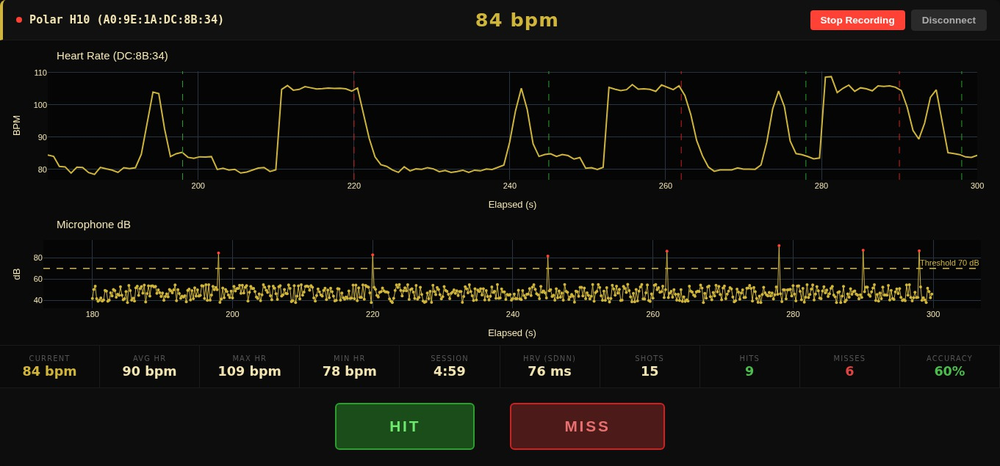
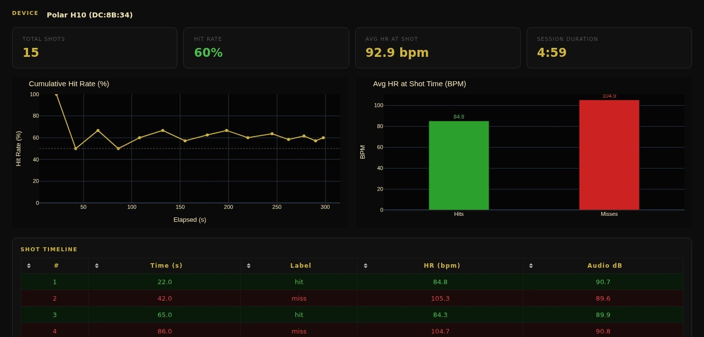
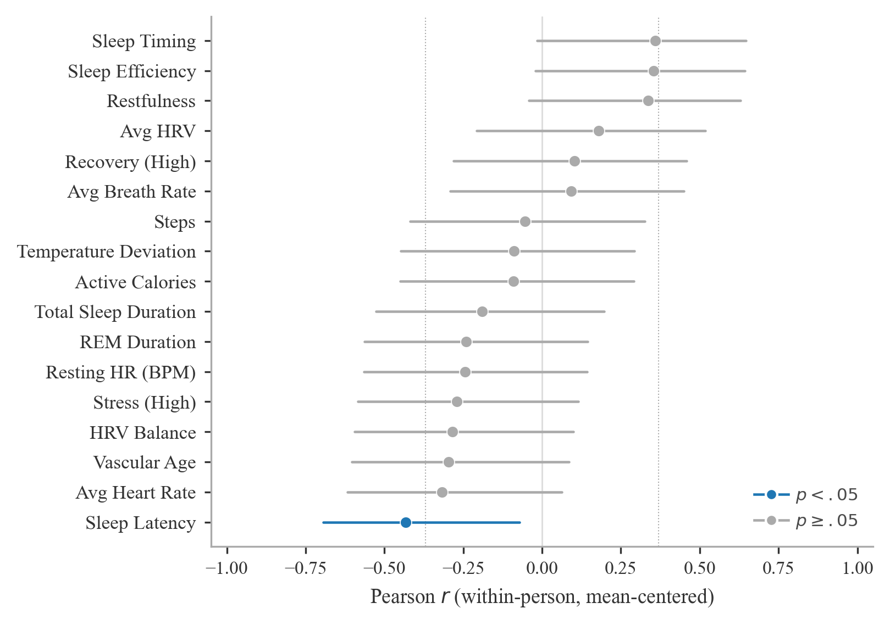

The broader capstone study from which this work originates examines whether deviations from a shooter's physiological baseline correspond with changes in shooting performance. Two complementary lines of effort were pursued. The first analyzed weekly Oura Ring lifestyle and recovery data from eight team members across six non-consecutive weeks. The second, documented here, focused on building a live monitoring tool to provide shot-synchronous heart-rate feedback during practice.
Precision shooting performance is sensitive to physiological state. Research in sports science and military contexts links sleep quality, autonomic balance, and cardiovascular indicators to fine motor control and sustained attention. A fundamental element of competitive shooting is the shot routine: a repeatable physiological sequence from stance through target acquisition and shot execution. Visualizing the heart-rate arc around each shot allows coaches and shooters to identify when execution is proceeding within or outside that routine.
The dashboard ingests two independent data streams and aligns them to a shared elapsed-time axis anchored at session start. Both streams are processed on the same end-user device, eliminating clock drift between sources.
Beat-by-beat heart rate is captured via Bluetooth Low Energy. Each BLE notification carries RR interval data in 1/1024-second units. Instantaneous heart rate is computed per beat as HR = 60,000 / RR (ms). The dashboard supports multiple simultaneous sensors.
Continuous microphone input computes RMS amplitude per frame. Frames exceeding a user-configurable decibel threshold (default 70 dB) are flagged as potential shot events and logged with an elapsed timestamp.
Both streams share one system clock initialized at the moment the first Bluetooth notification arrives. This ensures frame-accurate alignment between heart rate and audio events regardless of stream latency differences.
After each detected shot event, an observer marks the outcome as a hit or miss via the dashboard interface. The label is appended to the synchronized record alongside the instantaneous heart rate and audio peak at that moment.
Full session data exports to structured CSV files for offline analysis, designed for future integration with longitudinal Oura biometric data to enable unified adaptive feedback at the individual and team level.


The following results are drawn from the first line of effort, which analyzed weekly Oura Ring biometric data from eight USMA Skeet and Trap Team members across 28 person-week observations. Within-person mean centering was applied throughout to separate week-to-week physiological variation from stable between-shooter differences.
Sleep latency demonstrated the strongest within-person association with shooting performance. Weeks in which a shooter took longer to fall asleep corresponded to lower scores relative to that shooter's individual baseline. Several additional features, including sleep timing, efficiency, restfulness, and average heart rate, showed moderate associations. The regression below was estimated using five mean-centered predictors selected to minimize collinearity, with standard errors clustered by shooter.
| Feature | Coefficient | Std. Error | t | p |
|---|---|---|---|---|
| HRV Balance | -0.14 | 0.02 | -9.34 | < .001 |
| High Stress Time | -0.00 | 0.00 | -4.09 | < .001 |
| Average Heart Rate | -0.53 | 0.13 | -3.99 | < .001 |
| Vascular Age | -1.22 | 0.35 | -3.50 | < .01 |
| Sleep Latency | -0.01 | 0.01 | -2.48 | = .013 |

This dashboard was developed as part of the following capstone paper: